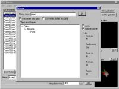
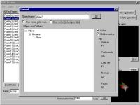

Screenshots
  
|
Features
| * 3D graphic via OpenGL |
(Ablaze Space Object - Creator)
Briefly info
| Release date: | 11 September, 2000 |
| Platform: | Windows |
Description
| With this program you are able to create a aso-model animations. It load's VRML files and use them as key-frames. I create all animations from my newer games (eg. Invasion) with it! |
|
Screenshots
|
Features
|
Downloads
| File | Date | Size | Description |
| aso-creator.zip | 24 Februar, 2002 | 604 KB | The main program and a help file. |
| aso-creator-scr.zip | 24 Februar, 2002 | 33 KB | This are the source codes from the ASO-Creator. It's an VisualC++ project and easy to compile. (GNU GENERAL PUBLIC LICENSE) |